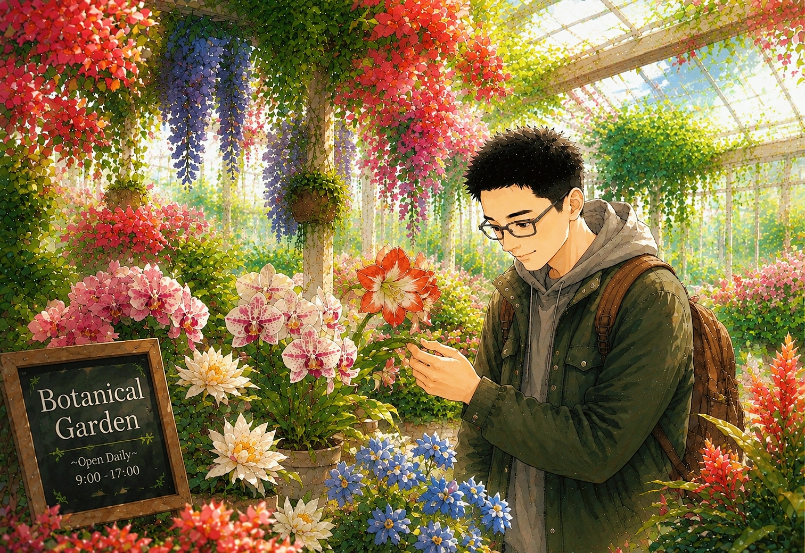
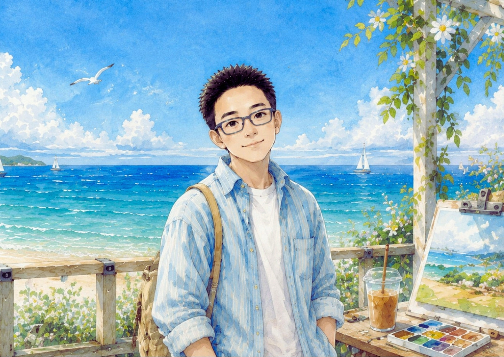
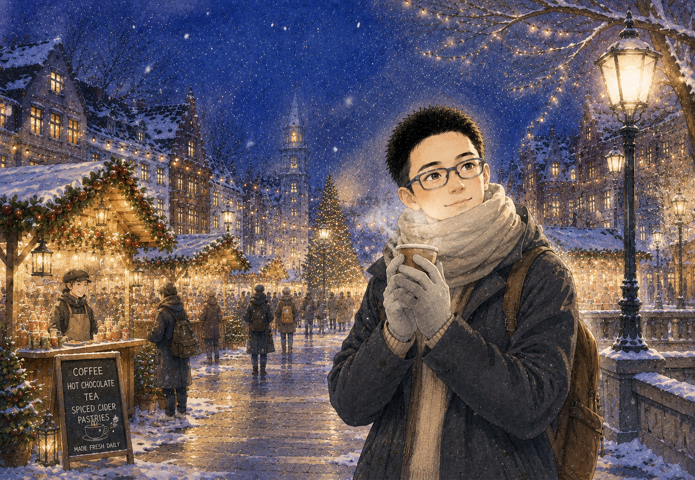

SPRING / 01
Spring
A quiet beginning, collected in the botanical garden. Front image assembled; reverse side in progress.
Victory won't come to us unless we go for it. —— Maya Angelou
Enter the archive ↓
Four small seasonal pieces, shown here as the front images of the collection.

A quiet beginning, collected in the botanical garden. Front image assembled; reverse side in progress.

Warmth, colour, and a little more noise. Front image assembled; reverse side in progress.
A slower palette and a softer edge. Front image assembled; reverse side in progress.

The last piece in the cycle. Front image assembled; reverse side in progress.
Not everything needs to become a project. Some things can simply remain here: a season, a photograph, a thought, a half-finished idea.
Fragments of my everyday, things that stay with me, and questions I keep asking.
Maybe a personal website doesn't need to explain what kind of person you are.
The things you leave behind usually say enough.
Still figuring out what deserves to be made, and what can simply be noticed.
More pictures, notes, experiments, and unfinished things elsewhere.